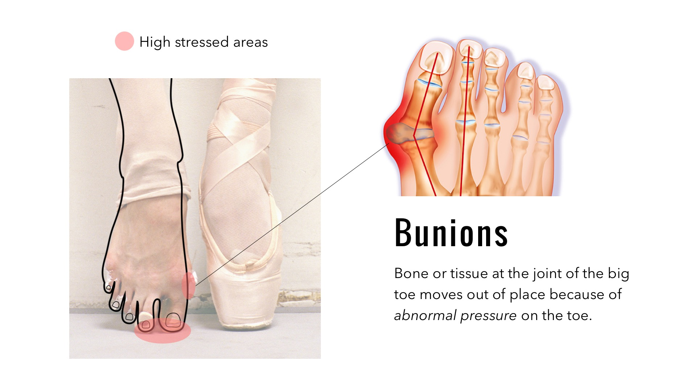
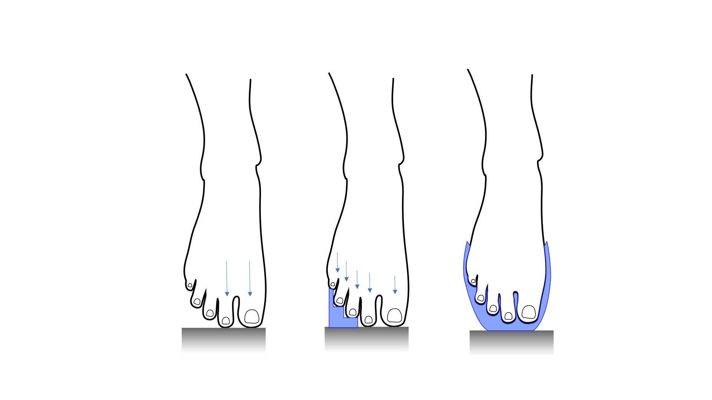
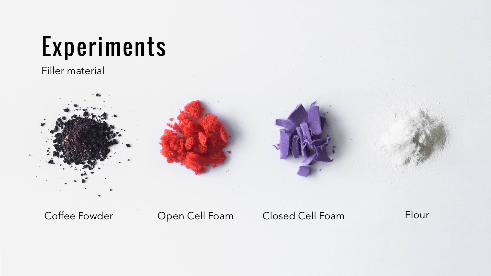
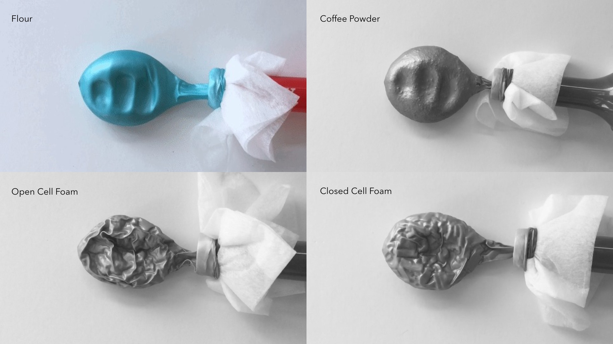
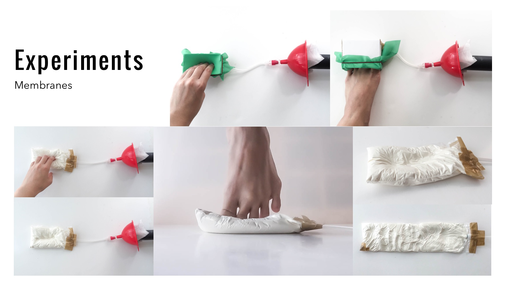
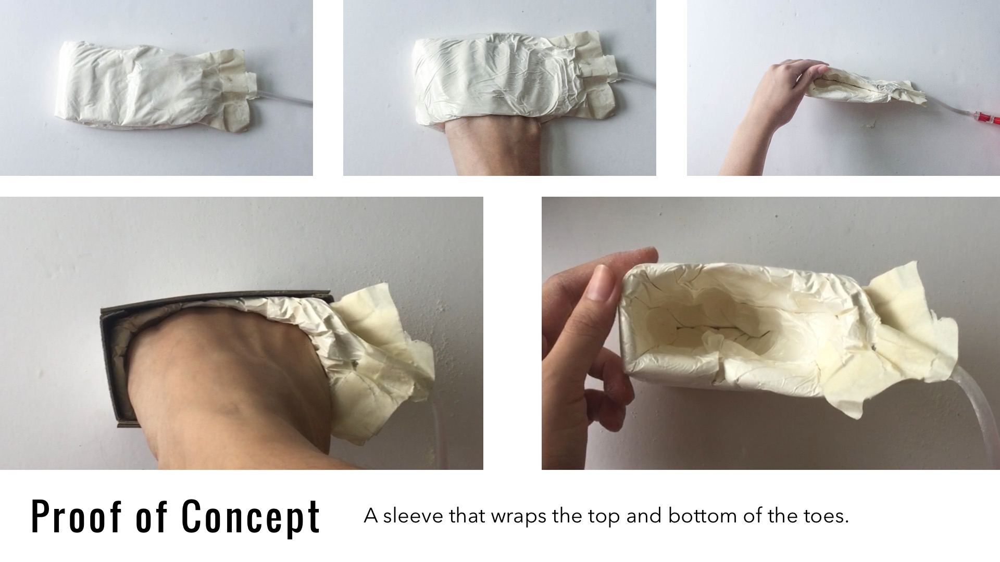

A Pointe Sleeve
2018
This project explores the use of soft vacuum in pointe shoes as a solution to provide better comfort without compromising support when ballet dancers go en pointe in their dances.


The problem with the pointe shoes is that most of the pressure is applied on the first two toes. Due to this, ballerinas can suffer from painful bunions which is caused when the toes go out of alignment, putting pressure on the joint. The current solution to solve that are toe spacers that prevents the toe from shifting.
   